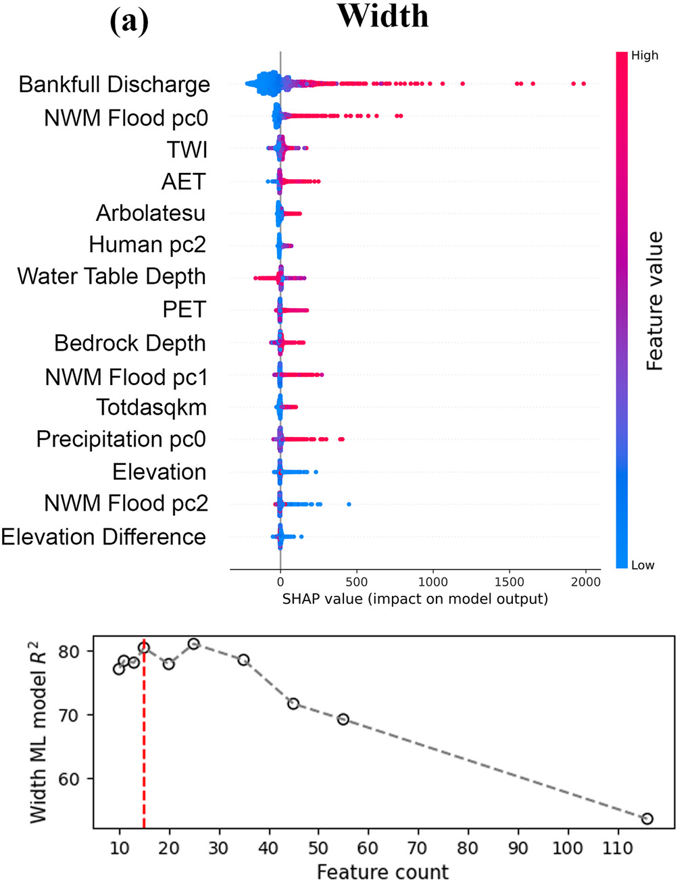
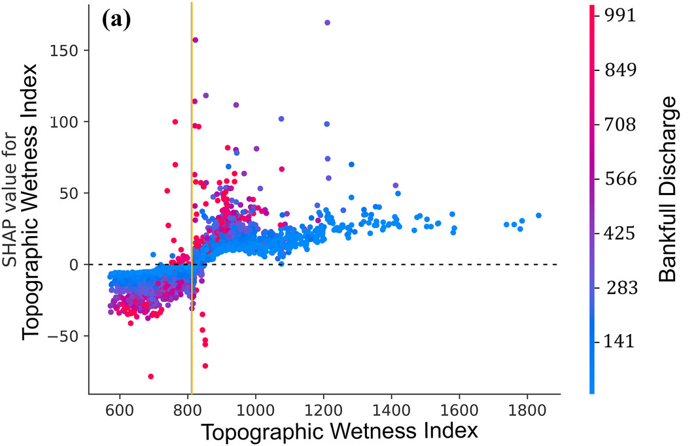

TopWidth: Explainable AI & Geomorphic Drivers¶
A central objective of the v1.0 parameterization framework is ensuring that machine learning predictions are not mere statistical correlations, but physically consistent representations of fluvial mechanics (Modaresi Rad et al., 2024). To interpret model behavior, quantify the contribution of each predictor, and discover non-linear environmental couplings, we utilize TreeSHAP (SHapley Additive exPlanations) grounded in cooperative game theory (Lundberg & Lee, 2017).
Game-Theoretic Formulation (TreeSHAP)¶
For any given stream reach \(x\), TreeSHAP decomposes the model prediction \(f(x)\) into an additive sum of a base expected value \(\phi_0 = \mathbb{E}[f(x)]\) and reach-specific attribution values \(\phi_j(x)\) for each environmental feature \(j\):
The exact Shapley attribution \(\phi_j\) is computed by evaluating the marginal contribution of feature \(j\) across all possible feature subsets \(S \subseteq F \setminus \{j\}\):
This formulation satisfies four essential game-theoretic properties:
- Efficiency: \(\sum_{j=1}^M \phi_j(x) = f(x) - \mathbb{E}[f(x)]\) (exact sum to the model prediction delta).
- Symmetry: Identical features receive identical attributions.
- Dummy/Null Player: Features with zero marginal impact receive \(\phi_j = 0\).
- Additivity: Attributions from ensembled models sum linearly.
Global Feature Importance & Elbow Optimization¶
The global importance of each hydro-geomorphic feature was evaluated across all CONUS training reaches by calculating the mean absolute Shapley value (\(|\phi_j|\)):

{kind=link}
flowchart TD
subgraph DRIVERS ["Dominant TopWidth Predictors (Top 15 Subset)"]
direction TB
QBF["<b>1. Bankfull Discharge (Q<sub>bf</sub>)</b><br/>Primary volumetric driver of channel-forming capacity"]
PC0["<b>2. NWM Flood pc0</b><br/>Hydrograph peak skewness & flood recurrence moments"]
TWI["<b>3. Topographic Wetness Index (TWI)</b><br/>Valley saturation, groundwater convergence & floodplain extent"]
AET["<b>4. Actual Evapotranspiration (AET)</b><br/>Catchment water balance & vegetated runoff regulation"]
ARB["<b>5. Arbolate Sum (arbolatesu)</b><br/>Cumulative upstream hydrographic network length"]
HUM["<b>6. Human pc2 & Water Table Depth</b><br/>Anthropogenic landscape modification & groundwater table proximity"]
ENV["<b>7. Bedrock Depth & Elevation Metrics</b><br/>Geologic confinement & gravitational potential energy"]
end
class DRIVERS highlight-blue;
class QBF highlight-blue;
class PC0 highlight-blue;
class TWI highlight-teal;
class AET highlight-teal;
class ARB highlight-teal;
class HUM highlight-orange;
class ENV highlight-orange;Top 15 Predictors Ranked by SHAP Value¶
| Rank | Feature Name | Category | SHAP Directionality & Hydraulic Mechanism |
|---|---|---|---|
| 1 | Bankfull Discharge | Hydrology | Dominant positive driver. High \(Q_{\text{bf}}\) (red dots) provides the primary kinetic energy to widen channel margins (\(\text{SHAP} > +500\)). |
| 2 | NWM Flood pc0 | Flow Dynamics | First principal component of NWM 2.1 flood frequency moments; captures peak flood flashiness and multi-year flood volume. |
| 3 | Topographic Wetness Index (TWI) | Geomorphometry | \(\text{TWI} = \ln(a / \tan \beta)\) reflects unconfined valley-floor accommodation space; high TWI promotes wider channels. |
| 4 | Actual Evapotranspiration (AET) | Hydroclimate | High AET in vegetated catchments modulates runoff volume and channel boundary maintenance. |
| 5 | Arbolatesu | Hydrography | Cumulative upstream network length; scales with cumulative discharge and sediment transport capacity. |
| 6 | Human pc2 | Landscape | Principal component capturing anthropogenic land use, urban imperviousness, and altered floodplain connectivity. |
| 7 | Water Table Depth | Groundwater | Shallow water tables (high saturation) maintain wider active channel corridors; deep water tables suppress width. |
| 8 | PET | Climate | Potential Evapotranspiration; reflects atmospheric evaporative demand and climatic aridity gradients. |
| 9 | Bedrock Depth | Geology | Deep alluvial overburden allows unrestricted lateral channel migration, whereas shallow bedrock restricts widening. |
| 10 | NWM Flood pc1 | Flow Dynamics | Second principal component of NWM flood quantiles; captures moderate-recurrence flood pulse characteristics. |
| 11 | Totdasqkm | Drainage Scale | Total upstream drainage area (\(\text{km}^2\)); fundamental scaling metric following classical \(W \propto A^{0.4\text{--}0.5}\) relations. |
| 12 | Precipitation pc0 | Climate | Principal component of continental precipitation depth and storm intensity distributions. |
| 13 | Elevation | Terrain | Absolute reach elevation; separates lowland alluvial rivers from steep, confined alpine streams. |
| 14 | NWM Flood pc2 | Flow Dynamics | Third principal component of NWM flood quantiles; captures high-frequency, low-magnitude pulse dynamics. |
| 15 | Elevation Difference | Terrain | Reach-level relief; steep drops concentrate flow energy vertically rather than laterally. |
Elbow Method Feature Space Optimization¶
As shown in Figure 1b, training the ML regressor across varying feature subset sizes demonstrates clear elbow behavior:
- At 116 features, the model exhibits excess collinearity and noise, achieving \(R^2 \approx 54\%\).
- Recursive feature dropping tracking validation skill concentrates predictive power into the top orthogonal predictors.
- The performance curve reaches its optimal plateau at 15 features (\(R^2 \approx 81\%\)), highlighted by the red dashed line. Removing features below 15 causes model skill to decline (\(R^2 < 77\%\)).
SHAP Interaction & Dependency Analysis¶
To examine non-linear threshold effects, SHAP interaction values decouple the primary feature response from joint multi-variable dependencies:

{kind=link}
Topographic Wetness Index \(\times\) Bankfull Discharge Interaction¶
flowchart TD
subgraph CONFINED ["1. Steep / Confined Valleys (TWI < 810)"]
C1["Low Valley Accommodation Space<br/>Structural Lateral Confinement"]
C2["<b>Negative SHAP Contribution (-50 to 0 m)</b><br/>Flow Energy Directed into Bed Shear"]
C1 --> C2
end
subgraph UNCONFINED ["2. Broad Alluvial Valleys (TWI > 810)"]
U1["High Saturated Convergence<br/>Expansive Floodplain Valley Floor"]
U2["<b>Positive SHAP Contribution (+20 to +150 m)</b><br/>Multi-Threaded & Broad Alluvial Widths"]
U1 --> U2
end
CONFINED ~~~ UNCONFINED
class CONFINED highlight-blue;
class UNCONFINED highlight-teal;
class C1 highlight-blue;
class C2 highlight-blue;
class U1 highlight-teal;
class U2 highlight-teal;Physical Mechanisms Revealed:¶
- Threshold at \(\text{TWI} \approx 810\):
- For steep, narrow valleys (\(\text{TWI} < 810\)), SHAP values remain negative (\(-50\text{ to }0\text{ m}\)), indicating that structural lateral confinement prevents channel expansion even during high flow events.
- At \(\text{TWI} \approx 810\), the relationship exhibits a sharp positive transition, where valley floors widen sufficiently to allow unconstrained lateral bank migration.
- Amplification by Bankfull Discharge:
- Above \(\text{TWI} > 810\), reaches with high bankfull discharge (\(Q_{\text{bf}} > 500\text{ m}^3/\text{s}\), pink/red points) experience dramatic positive width adjustments (\(\text{SHAP} > +50\text{ to }+150\text{ m}\)), reflecting large alluvial meander belts and multi-thread active channel corridors.
Local Case Study Explanations¶
To illustrate how the model adapts across contrasting continental geomorphic settings:
flowchart TD
subgraph APPALACHIAN ["Humid Appalachian Headwater (Order 2)"]
A_IN["Low TWI (720)<br/>High Elevation (850 m)<br/>Low Q<sub>bf</sub> (12 m³/s)"]
A_SHAP["SHAP Attributions:<br/>• TWI: -12.4 m<br/>• Elevation: -8.2 m<br/>• Q<sub>bf</sub>: +15.1 m"]
A_OUT["<b>Predicted Bankfull Width: 6.8 m</b><br/><i>Narrow, Structurally Confined Bed</i>"]
A_IN --> A_SHAP --> A_OUT
end
subgraph MIDWEST ["Midwestern Alluvial River (Order 6)"]
M_IN["High TWI (1,150)<br/>High Arbolate Sum (4,200 km)<br/>High Q<sub>bf</sub> (620 m³/s)"]
M_SHAP["SHAP Attributions:<br/>• Q<sub>bf</sub>: +48.2 m<br/>• TWI: +24.5 m<br/>• Arbolate Sum: +18.6 m"]
M_OUT["<b>Predicted Bankfull Width: 96.2 m</b><br/><i>Broad, Unconfined Alluvial Corridor</i>"]
M_IN --> M_SHAP --> M_OUT
end
class APPALACHIAN highlight-blue;
class MIDWEST highlight-teal;
class A_IN highlight-blue;
class A_SHAP highlight-blue;
class A_OUT highlight-blue;
class M_IN highlight-teal;
class M_SHAP highlight-teal;
class M_OUT highlight-teal;Verification Against Classical Fluvial Theory
The XAI analyses rigorously confirm that the machine learning pipeline adheres to established physical principles:
- Leopold & Maddock (1953): Power-law downstream scaling governed by volumetric discharge and drainage area.
- Schumm (1960): Narrowing and deepening of channels in response to high sediment clay/silt fractions and cohesive bank boundaries.
- Hack (1957) & Flint (1974): Slope-area concavity relationships governing channel energy distribution and valley confinement.
Section Navigation¶
- TopWidth v1.0 Overview: Problem statement, FHG power-law equations, and key findings.
- Model Architectures: 50 baseline algorithms, Bayesian optimization, and Meta-Learner stacking.
- Model Skill & Continental Validation: Evaluation across 3,543 USGS stations, HLR comparisons, and literature benchmarking.